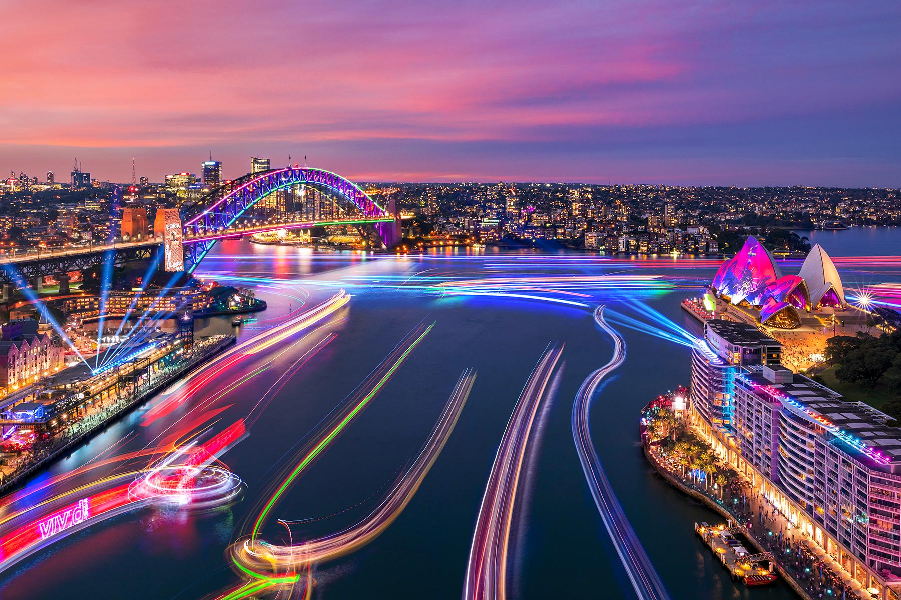
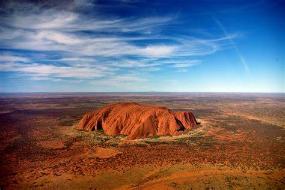
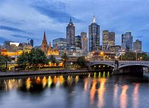

Opéra de Sydney
Symbole emblématique de l'Australie, l'Opéra de Sydney est célèbre pour son architecture unique et son emplacement au bord du port.

Uluru (Ayers Rock)
Un monolithe imposant et sacré pour les peuples autochtones, situé au cœur de l'Australie centrale, Uluru offre des couchers de soleil spectaculaires.

Grande Barrière de Corail
La plus grande barrière de corail du monde, idéale pour la plongée, regorge de vie marine et de récifs colorés.

Melbourne
Capitale culturelle de l'Australie, Melbourne est réputée pour ses galeries d'art, ses cafés branchés et ses événements sportifs.